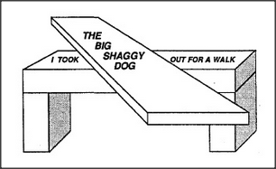

Some language scholars seem to think that what we do in language is unique, in the filling of frames with other frames to open up a universe of complicated structure-forms. But consider how frequently we do similarly complex things in understanding visual scenes. The language-agency must be able to interrupt itself, while handling one phrase, to work on parts of another phrase, and this involves some complex short-term memory skills. But in vision, too, there must be similar processes involved in breaking scenes apart and representing them as composed of objects and relationships. The picture below suggests how similar such processes may be. In language, the problem is to recognize that the two words took and out both belong to the same verb phrase, although they are separated in time. In vision, the problem is to recognize the two regions of a tabletop as being parts of the same object, although they are separated in space.
Notice also that we cannot see the tops of the blocks that serve as legs — and yet we do not have the slightest doubt about where they end. Similarly, the ends of language phrases are frequently unmarked — yet again we can tell where they end. In The thief who took the moon moved it to Paris, the word who marks the beginning of a new frame, but there is no special word to indicate the ending of that phrase. Why don't we wrongly assign the moon to the Actor of the spurious phrase, The moon moved it to Paris? It is because we first heard . . . who took the moon, which caused the moon to get attached to the Object pronome of the Trans-frame for took — so now it's not available to serve as Actor in the frame for moved. The thief is still available to play that role. I don't mean to suggest we can never assign the same phrase to two different roles, only that good speakers choose their forms so that this doesn't happen by accident.
Did our capacity to deal with phraselike structures evolve first in language or in vision? Among our ancestors, vision greatly antedates language, so if these abilities are related, our language-agencies themselves more likely evolved from variants of genes that first evolved in shaping the architecture of our vision-systems. Today we have no way to verify such a conjecture, but future geneticists may become able to trace the ancestry of many such relationships by examining the genes that generate the corresponding brain structures.